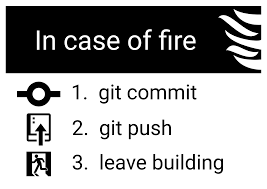

Git/Github
Dette er en tjeneste som er brukt av de fleste IT selskap for prosjektene sine.
Git
Git er en versjonskontroll. En kan bruke git for at flere folk kan jobbe på et og samme prosjekt om gangen uten å ødelegge for hverandre. Om to personer jobber på samme fil samtidig og så laster den ene opp det de har gjort så kommer den andre å laster opp sitt ville da alt arbeidet som den første gjorde bli overskrevet av den andre, men git stopper dette fra å skje. Om denne situasjonen skulle oppstå så kan den andre personen se filendringer før han laster opp og da merge filene om det ikke skulle være noe problem.
Github
Github er en slags skytjeneste hvor en lagrer filene sine. Her har man oversikt over alle fonandringer som har skjedd og kan da hente inn gamle versjoner av filer om det er noe som har gått galt. Det er også mulig å se hvem som har gjort en forandring og når de gjorde det.